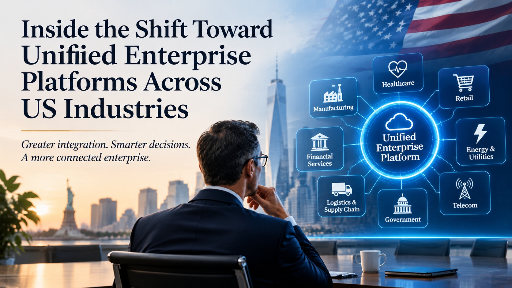

Inside the Shift Toward Unified Enterprise Platforms Across US Industries
Greater integration. Smarter decisions. A more connected enterprise.

Walk through almost any large US organization and you will find the same picture: finance in one system, operations in another, customer records in a third, and a team whose real job is to reconcile them. Each system made sense when it was bought. Together they slow every decision that depends on more than one of them.
That is why more organizations are consolidating separate applications into connected platforms. Most do it in stages, through Enterprise System Modernization Services USA that retire the oldest dependencies first and connect the rest, rather than through one risky replacement.
This page explains what is driving the shift, how it differs across eight sectors, and the decisions leaders face before they begin.
Three forces behind the shift
One version of the truth
When sales, finance, and operations each hold their own figures, meetings turn into reconciliation.
Rising integration cost
Every new tool added to a separate stack adds another connection to build, secure, and maintain.
Visibility under scrutiny
It is easier to show who did what, and when, on a connected platform than across a dozen systems.
Eight sectors, one pattern
The same idea takes a different shape in each sector. Select one to explore.
Manufacturing
- What gets connected
- Production, inventory, and finance data
- A common obstacle
- Older plant systems that were never built to share data
- A first step
- Map how a customer order moves from the plant floor to the invoice.
Healthcare
- What gets connected
- Clinical, scheduling, and billing workflows
- A common obstacle
- Strict privacy requirements that shape every integration
- A first step
- Agree which system owns the patient record, and who may see it.
Retail
- What gets connected
- Inventory, ordering, and customer data across channels
- A common obstacle
- Many separate sales channels, each with its own data
- A first step
- Choose one source for stock levels that every channel shares.
Financial services
- What gets connected
- Customer, risk, and compliance information
- A common obstacle
- Heavy regulatory scrutiny of any change
- A first step
- Document data lineage for the reports regulators ask for most.
Energy and utilities
- What gets connected
- Asset, field, and billing systems
- A common obstacle
- Aging field infrastructure and mixed technology
- A first step
- Link work orders to asset records before anything else.
Logistics and supply chain
- What gets connected
- Orders, shipments, and carrier data
- A common obstacle
- Many external partners that report in different formats
- A first step
- Standardize the shipment status that every partner reports.
Telecom
- What gets connected
- Network, customer, and billing systems
- A common obstacle
- Very large customer volumes that magnify every error
- A first step
- Reconcile one customer view across billing and support.
Government
- What gets connected
- Case, records, and citizen-service systems
- A common obstacle
- Long-standing system mandates and procurement rules
- A first step
- Pick one high-volume service and unify its records end to end.
Illustrative examples, not guidance for any specific organization.
What “unified” means, and what it does not
It means
- Shared, trusted data across functions
- Systems that connect through clear interfaces
- One view for leaders, with role-based access
- Retiring duplicate tools with a plan
It does not mean
- One giant application that does everything
- Replacing every system at once
- One view of everything for everyone
- Removing tools that still do their job well
A staged path
Assess
List systems, owners, data flows, and every point where people re-enter or reconcile data.
Align
Agree which system owns which record, and which outcomes the consolidation must improve.
Connect
Link the highest-value systems first and measure the effect before widening the scope.
Retire
Switch off duplicates only after users and data have moved safely.
Six questions to settle first
- Which three decisions are slowed most by disconnected data?
- Which system owns each key record?
- Which systems are unsupported or costly to keep?
- Where do people re-enter or reconcile data today?
- Who is the executive owner of the outcome?
- What baseline will we use to measure improvement?